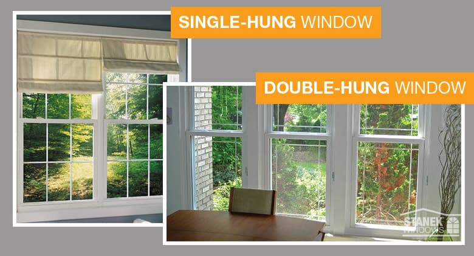

Hover over the images of windows to learn more about them!

A single hung window has a fixed top sash and an operable bottom sash that moves vertically. In a double hung window, both the top and bottom sashes are operable.

Arched windows are a historic innovation in the Roman Empire. They provide structural integrity and beauty to tall, grandiose buildings. The round tops contrast with the hard edges of rectangular windows, creating a softer aesthetic. This effect translates on both the inside and outside your home.

Awning windows are hinged on the top and open outward from the bottom, allowing for ventilation and protection from the rain. They are often placed higher on walls for privacy or in combination with large stationary windows for a better view.